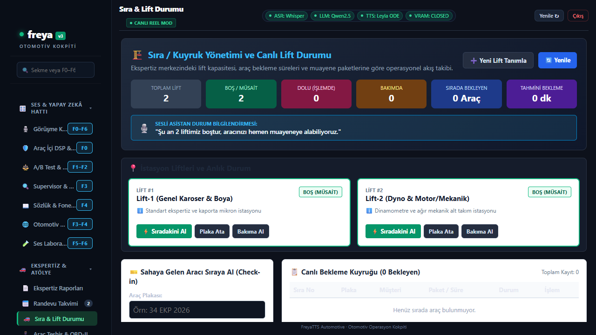
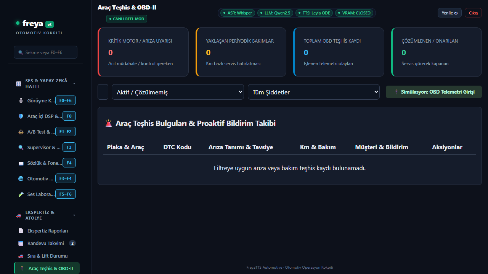
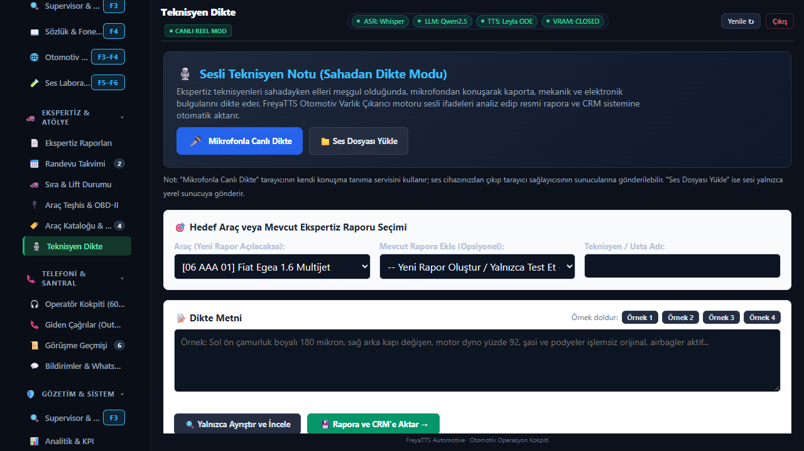
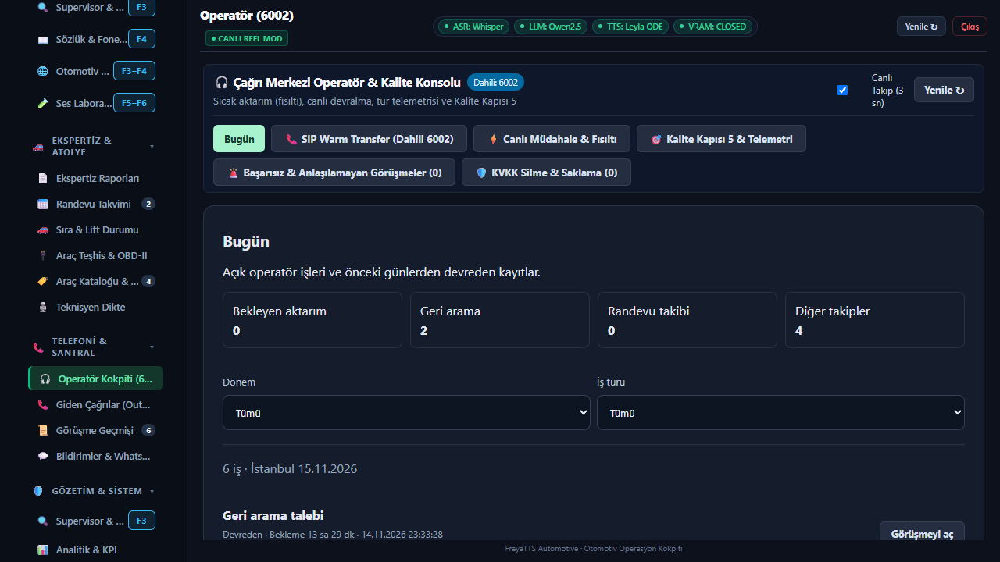
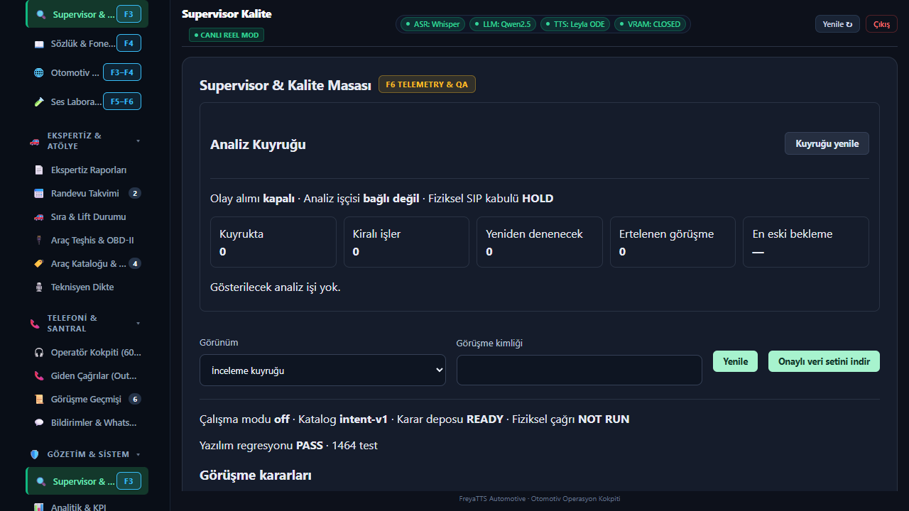

Devam Klibi • Bölüm 2
OPERASYONEL KULLANIM
VE ATÖLYE YÖNETİMİ.
Atölye & Lift
Sıra & Lift Yönetimi
Dinamik istasyon ataması, bekleme süresi ve teyitli randevular
Teşhis & Dikte
OBD-II & Usta Dikte
DTC arıza kodları ve eller serbest Türkçe sesli bulgu kaydı
Gözetim & Kilit
Operatör & M01–M11
Dahili 6002 masası, canlı fısıltı ve kurumsal emniyet bariyerleri
Kullanım Rehberi • Adım 1
Sıra & Lift Kapasite Yönetimi
4 ana lift istasyonunun anlık doluluk oranları, araç giriş-çıkışları ve randevu slotları tek ekrandan senkronize yönetilir.
Canlı Lift İstasyonları
Lift-1 (Mekanik), Lift-2 (Ağır Bakım), Lift-3 (Ekspertiz)
Bekleme Süresi Tahmini
Görüşme anında müşteriye doğrudan bitiş saati bildirimi


Kullanım Rehberi • Adım 2
OBD-II Teşhis & Teknisyen Dikte
Araçtan okunan hata kodları anında Türkçe açıklamalarıyla eşleşir; usta araç altındayken sesli dikte ile bulguları iş emrine işler.
DTC P0300 Ateşleme Arızası
Motor koruma tavsiyesi & çekici yönlendirme kilidi (M06)
Eller Serbest Usta Dikte
Faster-Whisper ile yağ sızıntısı ve parça aşınma transkripsiyonu


Kullanım Rehberi • Adım 3
Operatör Masası (6002) & FQICI
Yapay zekânın müşteriyle yaptığı görüşmeyi operatör kulaklıktan dinler, tek tuşla fısıldar veya çağrıyı devralır.
Canlı Araya Girme (Barge-In)
Karmaşık taleplerde müşteri bekletilmeden insan müdahalesi
5 Boyutlu FQICI Kalite Skoru
Niyet doğruluğu, nezaket ve empati seviyesi yapay zekâ denetimi


Kurumsal Emniyet Bariyerleri.
M01–M11 Kalite Kapıları.
M01 GÜVENCE
Sabit Fiyat Kilidi
Görüşmede verilen fiyat tek kaynak ontolojiden kilitlenir
M02 GÜVENLİK
KVKK Maskeleme
Kişisel veriler transkriptten anlık redaction ile silinir
M06 EMNİYET
Çekici Koruma Kuralı
Kritik arızalarda motor çalıştırma engellenir
M08 TELEFONİ
Operatör Fısıltı Masası
Dahili 6002 ile kesintisiz çağrı aktarımı ve denetim
FreyaTTS Automotive Cockpit • Telif Hakkı (c) 2026 Seydi Eryılmaz (@seydivakkas) • ÖZEL LİSANS / TÜM HAKLAR SAKLIDIR